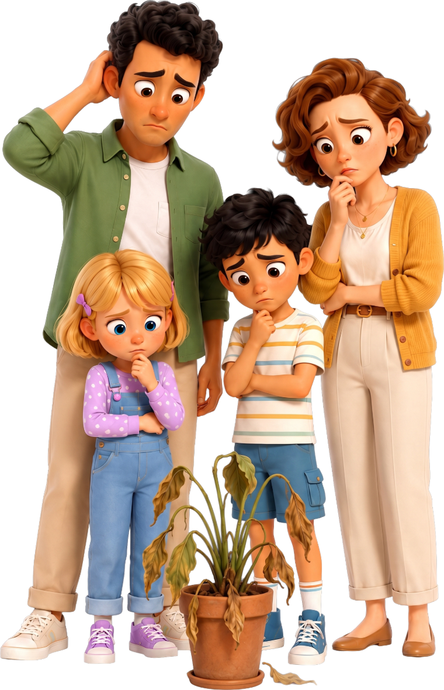
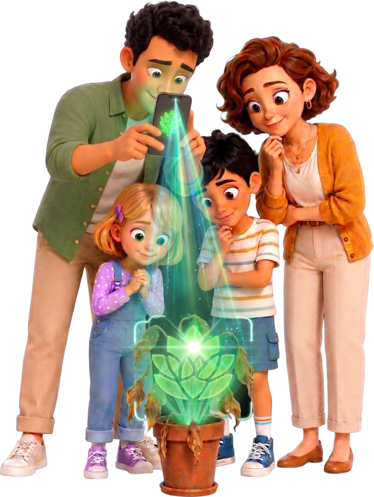
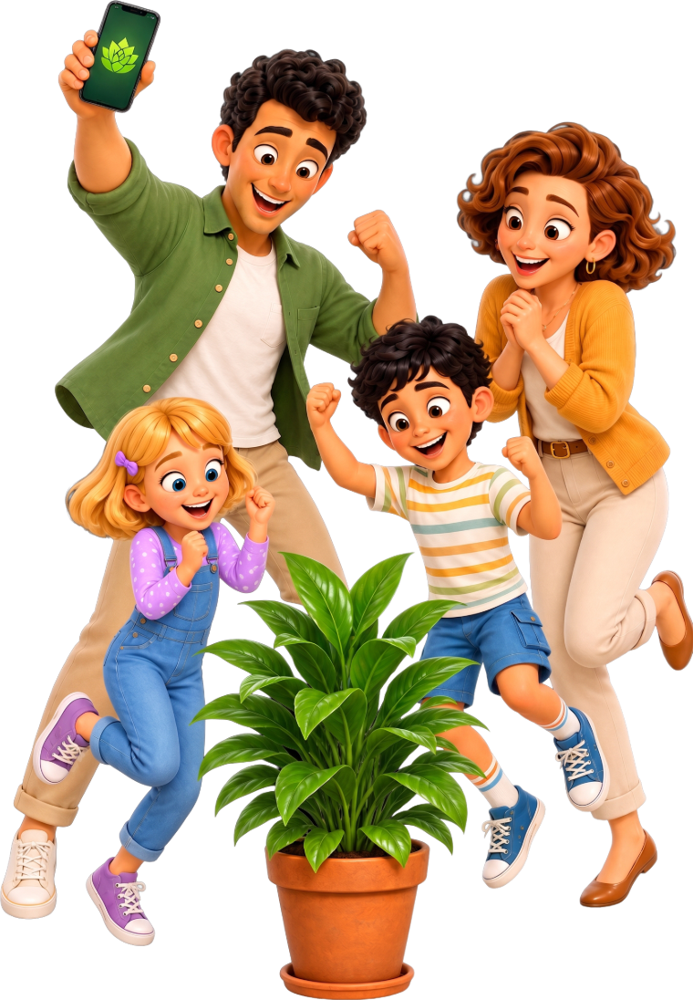

Tanpa instal apa pun — jalan di browser. iOS dan Android segera hadir.
Sebelum
Tak ada yang tahu kenapa.
?

Dengan Jardinly
Arahkan kamera.

Sesudah
Sekarang kamu tahu.

Saat bekerja
Ia menyebut nama tanaman saat kameramu masih bergerak.
Pindai
Analisis
Rencana
Bukti
Jardinly
Point · I read it live
LIVE AI PLANT CARE
Let's see what your plant needs.
Start a live scan
×
Speaking
LIKELY MATCH
Fiddle-leaf fig
Ficus lyrata
87%
match
Step 4 of 8 · underside of a leaf
Now show me the underside of one leaf — hold it steady.
THINKING
I'm comparing the leaf edges against what healthy growth looks like…
Three models cross-check before a word reaches you
Fiddle-leaf fig
Ficus lyrata
ImprovingDay 45
72of 100
Health
History+18
Day 1Day 4
Your recovery plan
Days 1–3 complete
4TodayOPEN
Check the soil 3 cm down
Give it 200 ml if the soil came away dry
5
Days 5–7
Tap to see what's in them
Jardinly+
Start next progress scan
Ia melihat.
Melihat dan bicara dalam satu waktu — ia menandai daun yang dimaksud.
×
Speaking
LIKELY MATCH
Fiddle-leaf fig
Ficus lyrata
87%
match
Step 4 of 8 · underside of a leaf
Now show me the underside of one leaf — hold it steady.
Ia mencocokkan.
Beberapa model saling memeriksa sebelum satu kata pun sampai padamu.
THINKING
I'm comparing the leaf edges against what healthy growth looks like…
Three models cross-check before a word reaches you
Ia mengingat.
Setiap pindaian tersimpan berurutan, agar “sudah membaik?” punya jawaban nyata.
IMPROVING
It's turning around
New growth at the crown and the soil is drying properly now. You did the hard part.
streak +1 · now 6 days
Day 1now
New leaf unfurlingSoil drying on timeColour evening out
The why behind it
The recovery is tracking faster than typical because the root damage stayed above the crown line, and your light levels rose as the season turned. What matters next is…
JARDINLY+
The why behind it
Continue caring
Semuanya, tanpa ribut.
Arahkan kursor ke kartu untuk melihatnya bekerja
Pindai langsung
Ia membaca tanaman sambil kamu bergerak.
Ficus lyrata
Identifikasi tanaman
Nama dan spesies dalam sekejap.
Kesehatan dari waktu ke waktu
Foto, bukan sekadar skor.
SEN
SEL
RAB
Rencana yang menyesuaikan
Disusun sesuai cahaya dan musimmu.
Riwayat diagnosis
Setiap pindaian, bertanggal dan berurutan.
Kenapa daunnya menggulung?
Air kurang
Tanya apa saja
Jawaban jelas, siang atau malam.
Pengujian Beta
Semuanya, dari kami. Untuk saat ini.
Kami dalam beta — Anda mendapatkan akses Pro penuh gratis. Tidak ada pembayaran, tidak ada batas percobaan. Anda membantu kami membangun masa depan perawatan tanaman.
Diagnosis tanaman tanpa batas
Perencana perawatan AI & pengingat
Obrolan suara & foto
Semua fitur berbayar di bawah — gratis selama beta
Ingin membantu kami berkembang?
Dukungan Anda membantu kami membangun alat perawatan tanaman AI terbaik — tapi hanya jika Anda mau. Tidak ada tekanan.
Semua orang memakai Botanist — paket tertinggi — selama beta berlangsung. Tidak ada yang dibayar dan tidak ada yang dibatalkan. Harga di bawah berlaku setelahnya.